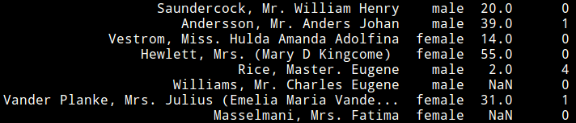

29. Missing values#
A very common problem with datasets is the presence of missing values. Data can be missing for a variety of reasons, including:
No measurement was made for a given individual/time/location, etc.
A measuring device failed.
There was an error in data entry.
The data was not disclosed for privacy reasons.
etc.
Depeding on their cause and their amount, missing data can have a significant impact on the conclusion of a study. In some cases, samples with missing data can be simply ignored. In other cases, however, the missingness of data is itself an important signal that cannot be ignored. We will examine several strategies to handle missing data.
{kind=link}

Fig. 29.1 Missing data in the famous Titanic passenger list dataset.#
29.1. Deletion#
A very simple way to handle missing values is simply to delete the samples or the variables that contain them. While this solves the missing data problem in a way, ignoring data can be significant if many values are missing. Removing missing values can also lead to ignoring an entire “category” of observations and can generate significant bias. In general, samples containing missing values should only be deleted if they are rare (e.g., less than 5%) and when one is confident that the data is missing completely at random and not as a result of a particular phenomenon.
29.2. Replace missing value with mean#
Another simple way to handle missing values is to replace them with the mean of the associated variables. As in the deletion approach, one should consider this approach only if missing values are rare (e.g., less than 5%) and if one is confident that the data is missing completely at random.
29.3. Interpolation#
In some cases, missing data can be naturally interpolated. For instance, if a device failed to record some values in a timeseries, it may make sense to interpolate the missing values using the observed values preceding and succeeding them. More sophisticated timeseries models can also be used. Other models can also be used to interpolate spatial data (e.g. kriging). Taking advantage of such structure can provide an appropriate remedy for missing values.
29.4. Imputation via maximum likelihood#
We now discuss a more sophisticated way of handling missing values that relies on maximum likelihood estimation (MLE). Using MLE provides a much more rigorous approach for reconstructing missing data. One downside, however, is that one needs a probabilistic model for the data. Before discussing this approach, we first examine different types of missing data mechanisms.
29.4.1. Missing data mechanisms#
Data can be missing for several reasons. Understanding the cause of missing data is an important first step for determining which approach to use to handle them.
29.4.1.1. Missing completely at random (MCAR)#
Data is said to be missing completely at random (MCAR) if the events that led to a missing value are independent of both the observable variables and of the unobservable variables of interest, and occur entirely at random. This is an ideal scenario where some of the simple approaches described below (e.g., deletion, replace by mean, etc.) are easier to justify. However, data is rarely missing completely at random in practice.
29.4.1.2. Missing at random (MAR)#
Data is said to be missing at random (MAR) if missingness is not random, but can be fully accounted for by observed values. This is common and can be handled using maximum likelihood estimation as we will discuss below.
29.4.1.3. Missing not at random (MNAR)#
The remaining category is missing not at random (MNAR), where data is neither MAR nor MCAR.
29.4.2. Example#
To illustrate the different missing data mechanisms, consider the following example of a study about people’s income. Suppose we are interested in recording the industry sector in which people work as well as their salary. Here are different reasons why income data may be missing:
Some people may not answer for no particular reason related to the study (don’t have time, don’t care, etc.). This is MCAR.
People in a certain sector, say tech, may be less likely to disclose their income (independently of their actual income). This is MAR if the data missingness can be explained by the observed sector.
People with low or high income may be less likely to disclose their income. This is MNAR.
Data that is MCAR or MAR can be handled using a variety of techniques. In the case of MNAR, the very fact that data is missing means something. For instance, in the above example, ignoring the missing income data could lead to completely ignoring what is happening with low or high income people. If one believes that the data is NMAR, extra steps should be taken to model or mitigate the missing data problem.
We will assume below that the data is either MCAR or MAR.
29.4.3. Imputation using MLE#
We now illustrate how maximum likelihood can be used to impute missing values. (You may want to review the discussion of MLE in section Estimating the regression coefficients).
Suppose we have independent observations of a discrete random vector \(X = (X_1, X_2, X_3, X_4)\) taking values in \(\{0,1,2,3\}\).
Let \(p(x_1, x_2, x_3, x_4) = P(X_1 = x_1, X_2 = x_2, X_3 = x_3, X_4 = x_4)\) be the probability mass function (pmf) of \(X\). Ignoring the missing data mechanism, we have
Assuming the data comes from a parametric model \(p(x_1, x_2, x_3, x_4; \theta)\) where \(\theta \in \Theta\) is unknown, we can proceed as above to evaluate the probability of each sample, and then evaluate the associated likelihood function:
where \(p_{1,3,4}(x_1, x_3, x_4) = \sum_{x_2=0}^3 p(x_1, x_2, x_3, x_4)\), \(p_{1,2}(x_1, x_2) = \sum_{x_3=0}^3 \sum_{x_4=0}^3 p(x_1, x_2, x_3, x_4)\), and \(p_{1,3}(x_1, x_3) = \sum_{x_2=0}^3 \sum_{x_4=0}^3 p(x_1, x_2, x_3, x_4)\) denote marginals of \(p\).
The likelihood can now be maximized as a function of \(\theta\) to yield the MLE for \(\theta\). This provides a model for the data.
29.4.3.1. Imputing missing values#
Once a model has been determined for the data, one can use it to impute missing values. In a given sample, let \(x_\textrm{miss}\) denote the missing part and \(x_\text{observed}\) denote the available part. One can show that the conditional expectation of the missing values given the observed ones:
is optimal for reconstructing missing values in the mean squared error sense. For example, for the sample \(x = (1, 3, \textrm{NA}, \textrm{NA})\), we reconstruct the missing values using:
where \(E\) is computed with respect to \(p(x_1, x_2, x_3, x_4; \theta)\).
In summary, given a family of probability models \(p(x; \theta)\) for the data, under MAR, we can:
Compute the likelihood of \(\theta\) by marginalizing over the missing values.
Estimate the parameter \(\theta\) by maximum likelihood.
Impute missing values using \(\hat{x}_{\textrm{miss}} = E_\theta(x_{\textrm{miss}} | x_{\textrm{observed}})\), where \(E_\theta\) denotes the expected value with respect to the probability distribution \(p(x; \theta)\).
For simplicity, we assumed above that the variables are discrete and the observations are independent. The same procedure can be applied without these assumptions.
29.5. The EM algorithm#
The methodology described above solves our missing data problem in principle (assuming one has a model for the data). However, in practice, explicitly finding the maximum of the likelihood function can be very difficult. The Expectation-Maximization (EM) algorithm of Dempster, Laird, and Rubin (1977) provides a more efficient way of solving the problem. It leverages the fact the the likelihood is often easy to maximize if there is no missing values.
For simplicity, we will assume our observations are independent and the random variables are discrete. We will use the following notation:
We assume we have a random vector \(W\) taking values in \(\mathbb{R}^p\).
The distribution of the vector is \(p(w; \theta)\), where \(\theta\) is a vector of parameters.
We want to estimate \(\theta\).
For each sample, we only observe a part of the vector
So \(x^{(i)}\) is the observed part and \(z^{(i)}\) is the unobserved part.
The log-likelihood function associated to this problem is given by
(the second sum is over all the possible values of \(z^{(i)}\)). We would like to maximize that function over \(\theta\). This is generally difficult.
Instead of trying to maximize the log-likelihood directly, the EM algorithm constructs a sequence of approximations \(\theta^{(i)}\) of \(\theta\).
Let \(\theta^{(0)}\) be an initial guess for \(\theta\).
Given the current estimate \(\theta^{(i)}\) of \(\theta\), compute
In other words, we compute the “average” of the log-likelihood function with respect to the missing values.
We then optimize \(Q(\theta | \theta^{(i)})\) with respect to \(\theta\):
We repeat this process until convergence.
One can show that this process approximates the MLE.
Theorem.
The sequence \(\theta^{(i)}\) constructed by the EM algorithm monotonically increases the log-likelihood:
As a result, the EM algorithm approximately returns a local maximum of the likelihood function. However, without any additional assumptions, there is no guarantee that the EM algorithm will find the global maximum of the likelihood function. In practice, one can use several starting points \(\theta^{(0)}\) to increase the chances of finding a global maximum.
As before, once an estimate \(\hat{\theta}\) of the model parameters has been obtained, we can estimate the missing values using the conditional expectation \(\hat{x}_{\textrm{miss}} = E(x_{\textrm{miss}} | x_{\textrm{observed}}, \hat{\theta})\).
29.6. Example#
An important model for data is the multivariate normal distribution, a multivariate generalization of the well-known 1D normal distribution. As a consequence of the central limit theorem, averages of approximately independent observations can often be well approximated using a multivariate normal distribution. For example, if data consists of, say, monthly averages of sales, then a normal distribution may be a good probability model to use to explain the data.
The following code is an implementation of the EM algorithm for multivariate normal data. We will not discuss the implmentation. Readers interested in understanding the details can consult Chapter 11 in the book Statistical Analysis with Missing Data by Little and Rubin
import numpy as np
from scipy import linalg
from scipy.stats import norm
def EM(X, C0 = [], M0 = [], tol = 5e-3, maxit = 200):
'''
Expectation-Maximization (EM) algorithm to estimate multivariate normal model with missing values
Parameters
----------
X: matrix (n x p)
Each row of X is an independent observation of a p-dimensional normal distribution
C0: matrix (p x p)
Initial covariance matrix of the field (Default = [], uses sample covariance matrix)
M0: vector (p)
Initial mean of the field (Default = [], uses sample mean)
tol: positive real
Tolerence used for convergence (Default = 5e-3)
maxit: int
Maximum number of iteration of the algorithm (Default = 200)
Returns
-------
X: matrix (n x p)
Matrix X whose missing entries have been reconstructed via MLE
C: matrix (p x p)
Estimated covariance matrix of the field
M: vector (p)
Estimated mean vector of the field
'''
# Start EM algorithm
print("Running EM algorithm:\n")
[n,p] = X.shape
# Find unique lines
indmis = np.isnan(X)
nmis = len(find(indmis))
(pattern, pattern_ix) = unique_rows(indmis)
s = pattern.shape
if len(s) == 1:
nb_pattern =1
pattern = pattern.reshape((1,s))
else:
nb_pattern = s[0]
if M0 == []:
# Center data
Xmask = np.ma.masked_array(X,indmis)
M = Xmask.mean(axis = 0)
M = M.filled(np.nan)
else:
M = M0
X = X-M
X[indmis] = 0.0
if C0 == []:
C = X.T.dot(X)/(n-1) + 0.1*np.eye(p)
else:
C = C0
it = 0
rdXmis = np.inf
Xmis = np.zeros((n,p))
print("Iter dXmis rdXmis\n")
while ((it < maxit) & (rdXmis > tol)):
it = it + 1
CovRes = np.zeros((p,p))
D = np.sqrt(np.diag(C))
D[abs(D) < 1e-3] = 1.0 # Do not scale constant variables
X = X/D
C = (C/D)/(D[:,None]) # Correlation matrix
for i1 in range(nb_pattern):
pm = pattern[i1,:].sum() # Length of the patterm
if (pm > 0) and (pm < p):
avlr = find(~pattern[i1,:])
misr = find(pattern[i1,:])
B, S = ols(C, avlr, misr)
ind_obs = find(pattern_ix == i1)
mp = len(ind_obs) # Number of rows matching current pattern
Xmis[np.ix_(ind_obs,misr)] = X[np.ix_(ind_obs,avlr)].dot(B)
CovRes[np.ix_(misr,misr)] = CovRes[np.ix_(misr,misr)] + mp*S
# Return to original scaling
X = X*D
Xmis = Xmis * D
C = (C*D)*(D[:,None])
CovRes = CovRes*D*(D[:,None])
dXmis = np.linalg.norm(Xmis[indmis] - X[indmis]) / np.sqrt(nmis)
nXmis_pre = np.linalg.norm((X+M)[indmis]) / np.sqrt(nmis)
if nXmis_pre < 1e-16:
rdXmis = np.inf
else:
rdXmis = dXmis / nXmis_pre
X[indmis] = Xmis[indmis]
Mup = X.mean(axis=0)
X = X-Mup
M = M + Mup
# Re-estimate C
C = (X.T.dot(X) + CovRes)/(n-1)
print("%1.3d %1.4f %1.4f" % (it, dXmis, rdXmis))
X = X + M
return [X, C, M]
def ols(Sigma, xind, yind):
'''
Computes regression coefficients in a multivariate Gaussian model
Parameters
----------
Sigma: matrix (p x p)
Covariance matrix of the field
xind: vector of int
Indices of x
yind: vector of int
Indices of y
Returns
-------
B: matrix
Regression coefficients
S: matrix
Covariance of the residuals
'''
B = linalg.inv(Sigma[np.ix_(xind,xind)]).dot(Sigma[np.ix_(xind,yind)])
S = Sigma[np.ix_(yind,yind)] - Sigma[np.ix_(yind, xind)].dot(B)
return [B, S]
def unique_rows(a):
'''
Returns the unique rows of a matrix
Parameters
----------
a: matrix
Returns
-------
unique_a: matrix
Matrix containing the unique rows of a
idx: Vector indicating the unique rows of a
'''
b = np.ascontiguousarray(a)
(uniq,idx) = np.unique(b.view(np.dtype((np.void, b.dtype.itemsize*b.shape[1]))),return_inverse = True)
unique_a = uniq.view(b.dtype).reshape(-1, b.shape[1])
return (unique_a,idx)
def find(condition):
'''
Code to replace the old matplotlib.mlab.find function
(Return the indices where some condition is true)
'''
res, = np.nonzero(np.ravel(condition))
return res
To illustrate the EM algorithm, let us begin by generating some data from a 3-dimensional multivariate normal distribution. We will use the following (arbitrary) mean vector and covariance matrices:
import numpy as np
p=3
mu = [0,1,2]
Sigma = np.array([[6,4,5],[4,3,4],[5,4,6]])
Let us generate a sample from that distribution
n=50
X = np.random.multivariate_normal(mu, Sigma, n)
Next, let us “forget” about 10% of the data at random. To achive that, we can just create a mask with about 10% of ones, and remove those values from X.
R = np.random.rand(n,p) # Matrix with Uniform[0,1] entries
mask = R <= 0.1
Xmiss = np.copy(X) # Creates a copy of X
Xmiss[mask] = np.nan # Inserts missing values according to the mask
We can now compare different strategies to reconstruct missing values. Let us first see how replacing missing values by the mean does in terms of MSE. This can be easily achieved using scikit-learn’s SimpleImputer.
from sklearn.impute import SimpleImputer
imp = SimpleImputer(missing_values=np.nan, strategy='mean')
imp.fit(Xmiss)
Xrecon1 = imp.transform(Xmiss)
The mean squared error computed over the missing values (mask) is:
MSE1 = np.mean((Xrecon1[mask]-X[mask])**2)
print(MSE1)
2.979082908843451
Let us now try the EM algorithm.
[Xrecon2, C, M] = EM(Xmiss)
Running EM algorithm:
Iter dXmis rdXmis
001 1.6892 1.1973
002 0.1554 0.0846
003 0.0517 0.0274
004 0.0182 0.0096
005 0.0057 0.0030
We again evaluate the mean squared error over the missing values:
MSE2 = np.mean((Xrecon2[mask]-X[mask])**2)
print(MSE2)
0.27686121401318475
This is much better.
Here, our data exactly consists of independent observations from a multivariate normal distribution. It is thus not surprising that the EM algorithm performs very well. Still, the above example illustrates how having a probabilistic model for data can lead to a significantly better estimate of missing values.